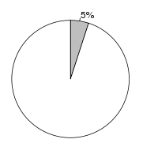
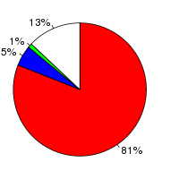

Hordeum vulgare (Hordeum vulgare, 030312v2) and Aegilops tauschii (Aegilops tauschii, GCA_000347335.1) were aligned using the LastZ alignment algorithm (LastZ) in Ensembl release 76. Hordeum vulgare was used as the reference species. After running LastZ, the raw LastZ alignment blocks are chained according to their location in both genomes. During the final netting process, the best sub-chain is chosen in each region on the reference species.
Full list of pairwise alignments| Gap open penalty (O) | 400 |
| Gap extend penalty (E) | 30 |
| HSP threshold (K) | 3000 |
| Threshold for gapped extension (L) | 3000 |
| Threshold for alignments between gapped alignment blocks (H) | 2200 |
| Masking count (M) | |
| Seed and Transition value (T) | 1 |
| Additional parameters | --ambiguous=iupac--identity=75..100--matchcount=1000 |
| Scoring matrix (Q) | Default |
| Hordeum vulgare | Aegilops tauschii | |
|---|---|---|
| Chunk size | 50,000,000 | 100,100,000 |
| Overlap | 0 | 100,000 |
| Group set size | 0 | 801,000,000 |
| Masking options | {default_soft_masking => 1} | {default_soft_masking => 1} |
Number of alignment blocks: 320626
| Genome coverage(bp) | Coding exon coverage (bp) | |
|---|---|---|
| Hordeum vulgare |  |  |
| Covered: 235,764,140 out of 4,706,173,842 | Matches: 22,247,983 out of 27,615,842 | |
| Uncovered: 4,470,409,702 out of 4,706,173,842 | Mis-matches: 1,492,598 out of 27,615,842 | |
| Insertions: 186,962 out of 27,615,842 | ||
| Uncovered: 3,688,299 out of 27,615,842 | ||
| Aegilops tauschii |
|
|
| Covered: 154,463,546 out of 3,313,764,331 | Matches: 23,671,654 out of 40,791,602 | |
| Uncovered: 3,159,300,785 out of 3,313,764,331 | Mis-matches: 1,614,749 out of 40,791,602 | |
| Insertions: 200,997 out of 40,791,602 | ||
| Uncovered: 15,304,202 out of 40,791,602 |